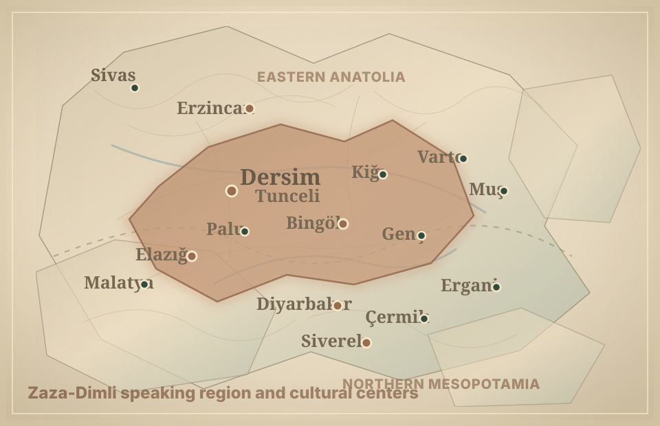
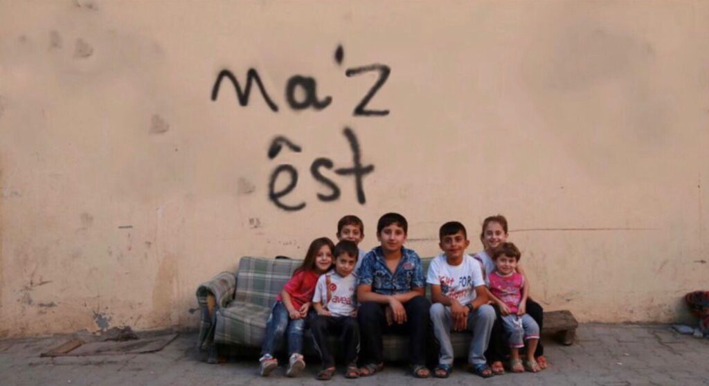
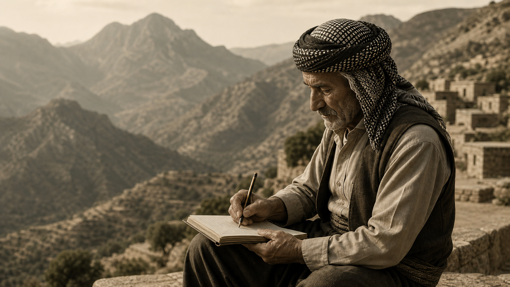
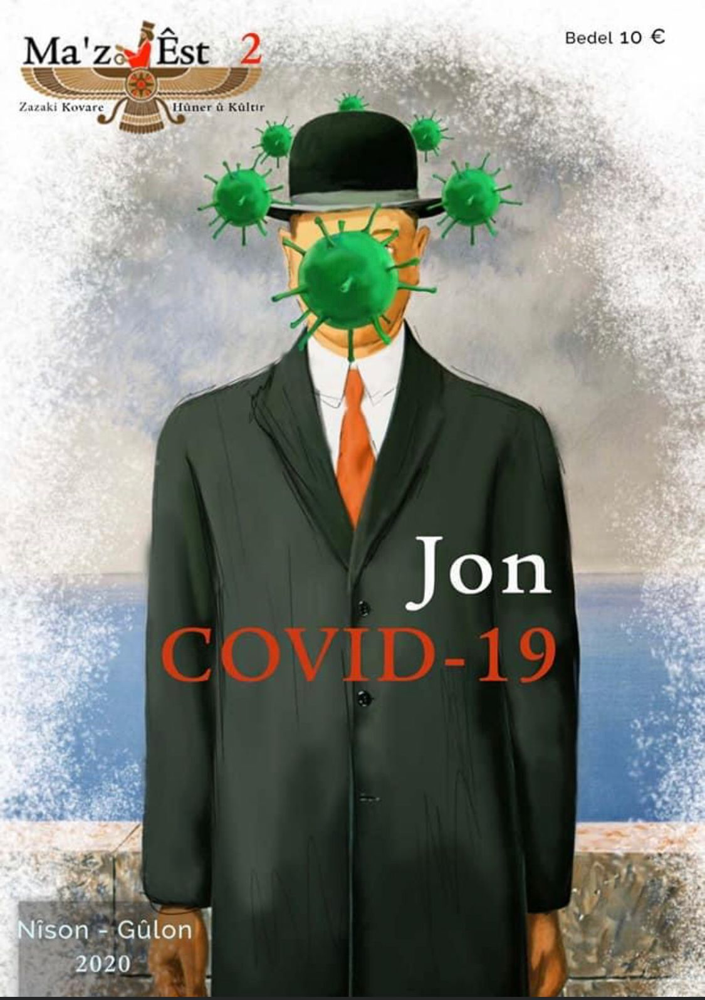
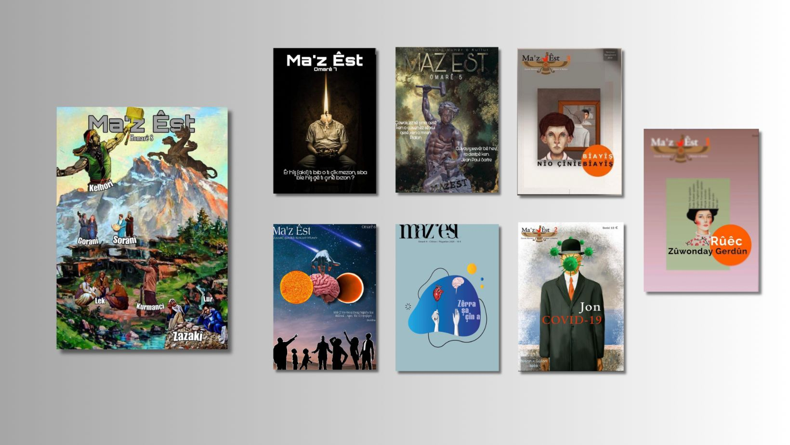

Research & Documentation
Academic research and fieldwork on Kurdish language and dialects.
 Ma'z Êst
Ma'z Êst
For a language, for an identity, for the future
Ma'z Êst is an academic and cultural organization committed to research, documentation and awareness about Kurdish language and dialects.
Academic research and fieldwork on Kurdish language and dialects.
We focus on Zazaki, a dialect facing severe endangerment.
We publish books, articles, reports and academic papers.
We raise awareness and promote Kurdish linguistic heritage.
Language heritage
Zazaki is one of the Kurdish languages spoken by millions of people. Today, it is at risk of disappearance. Ma'z Êst works to document, preserve and promote it for future generations.
Learn more about Zazaki
Zimanê min, hebûna min, ayinda min. My language, my existence, my future.
About us
Ma'z Êst is an independent, non-profit academic and cultural organization working for the documentation, preservation and promotion of Kurdish languages and dialects, with a special focus on Zazaki.
We conduct research, publish academic works, produce educational materials and raise awareness about the linguistic and cultural rights of Kurdish speakers.

A language is not just words. It is memory, culture, identity and existence.
Our work
We carry out academic and cultural activities to protect and promote Kurdish languages, especially Zazaki.
Discover our projects
We conduct fieldwork and academic research on Kurdish language, dialects and sociolinguistics.
We document oral traditions, folklore, vocabulary and grammar of endangered dialects.
We develop educational materials and organize workshops, seminars and training programs.
We advocate for linguistic rights and recognition of Kurdish languages at national and international levels.
Publications
We publish and curate academic books, reports, dictionaries, digital corpora and open-access resources on Kurdish languages, with a special focus on Zazakî / Kirmanckî documentation, transmission and revitalization.
Field report on children’s access to Zazaki, based on visits in Diyarbakır and interviews with institutions including Zarok TV, Ma Müzik and MED-DER.
Digital corpus for Zaza research, documentation and revitalization, with texts and linguistic annotations for academic use.
Research on intergenerational transmission of Zazaki in Bingöl families with children under 10, focusing on family language use and continuity.
Technical language profile for Zaza with glottocode zaza1246, ISO 639-3 zza and country reference for Türkiye.
Magazine
Our magazine features articles, interviews, research, cultural content and news related to Kurdish languages and issues.
Read latest issue
Academic and cultural articles on Kurdish language and society.
Conversations with researchers, writers and activists.
Literature, history, art and traditions of the Kurdish people.
Updates on activities, projects and important events.
Resources
Contact
For any question, comment, idea or collaboration proposal about Ma'z Êst, please contact us. We will be happy to read your message and respond as soon as possible.
